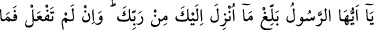
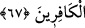

vasıtasıyla başımıza gelenleri anlattım. Bizim çıktığımız sahil ile onların bulundukları
yerin sekiz günlük mesafe olduğunu söylediler. Halbuki ben o mesâfeyi bir gecede
katetmiştim.
Bu hikâyeden de açıkça anlaşılacağı gibi takvâ ve ahde vefâ kişinin hem dünyâsını,
hem dînini mâmur eder. Basit görülse bile bir tek şehvet, ardında büyük sıkıntılar ve
üzüntüler bırakır. Hattâ yukarıda anlatılan hikâyede olduğu gibi bâzen insanı helâke bile
götürebilir.
Bil ki “şüphesiz hem üstlerinden ve hem de ayaklarının altından yerlerdi.” âyeti
Rahmân’ın bağışlaması (vehbî) ve insanın çalışması (kesbî) ile elde edilecek şeylere
işaret etmektedir. Kim bildiğiyle amel eder ve hak yolunda bütün gücüyle çalışırsa zevk
ve müşahedenin çeşitli mertebelerine ulaşır. Böylece iki cennete sahip olur: Biri amel
cenneti ve diğeri lütuf cenneti. Bu da makbul olan mânevî rızıktır.
Mesnevî’de şöyle denilmiştir:
Bu ağzını kapadın mı, başka bir ağız açılır
O ağız, sır lokmalarını yer yutar
Bedenini şeytan aslanından kurtarabilirsen
Allah’ın sofrasından nice nimetler yersin
Allahım, lütuf ve ihsânının feyzini üzerimizden eksik etme.
67. Ey Rasûl! Rabbinden sana indirileni tebliğ et. Eğer bunu yapmazsan O’nun
elçiliğini yapmamış olursun. Allah seni insanlardan korur. Doğrusu Allah, kâfirler
topluluğuna rehberlik etmez.
“Ey Rasûl!” kullarımın maslahatlarıyla ilgili “Rabbinden sana indirileni”n
tamamanı “tebliğ et” Bu âyet, ifşâsı yasak olan bazı ilâhî sırların bulunmadığı anlamına
gelmez. Ebû Hüreyre (r.a.) şöyle demiştir: “Rasûlullah (s.a.)’den iki kap ilim
öğrendim. Bunlardan birisini herkese yaydım. Fakat ikincisini yayacak olsam şu
boğazım kesilir.”[16] Doğrusu şerîatle ilgili hususların herkese tebliğ edilmesi gerekir.
Fakat ma’rifet ve hakikatle ilgili olanlar husûsîdir. Herkese anlatılmaz. Sadece ehil
olanlara anlatılır. Bunlar tebliğ edecek olan kimsenin elinde erbâbına ulaştırılması
gereken birer emânettir.
Başıma bir kötülük gelir korkusuyla sana indirilenin tamamını tebliğ etmeyerek “Eğer